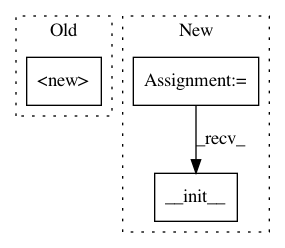

1229da197120189c6ce13f1d434ad467e9611893,sac/policies/hierarchy_policy.py,HierarchyPolicy,__init__,#HierarchyPolicy#Any#Any#Any#Any#Any#Any#Any#Any#,13
Before Change
self.name = name
self.build()
super().__init__(
env_spec,
self._observations_ph,
tf.tanh(self._actions) if squash else self._actions,
scope_name="policy"
)
def actions_for(self, observations):
TODO: implement
pass
After Change
self.name = name
self.build()
NNPolicy.__init__(
self,
env_spec,
self._observations_ph,
tf.tanh(self._actions) if squash else self._actions,
scope_name="policy")
def actions_for(self, observations, name=None, reuse=tf.AUTO_REUSE,
stop_gradient=True):
In pattern: SUPERPATTERN
Frequency: 4
Non-data size: 3
Instances
Project Name: rail-berkeley/softlearning
Commit Name: 1229da197120189c6ce13f1d434ad467e9611893
Time: 2018-05-22
Author: kristian.hartikainen@gmail.com
File Name: sac/policies/hierarchy_policy.py
Class Name: HierarchyPolicy
Method Name: __init__
Project Name: rail-berkeley/softlearning
Commit Name: 65878bf34c16e45b6ffaedef305fa260cf474498
Time: 2018-01-23
Author: haarnoja@users.noreply.github.com
File Name: softqlearning/policies/nn_policy.py
Class Name: NNPolicy
Method Name: __init__
Project Name: rail-berkeley/softlearning
Commit Name: 9734b9034c360223b0104327552b29009d05e073
Time: 2018-09-11
Author: kristian.hartikainen@gmail.com
File Name: softlearning/replay_pools/flexible_replay_pool.py
Class Name: FlexibleReplayPool
Method Name: __init__
Project Name: rail-berkeley/softlearning
Commit Name: bb13420f7bd2b33bb7ea8aa201bb022837723c2f
Time: 2018-07-09
Author: kristian.hartikainen@gmail.com
File Name: softlearning/environments/pusher.py
Class Name: PusherEnv
Method Name: __init__